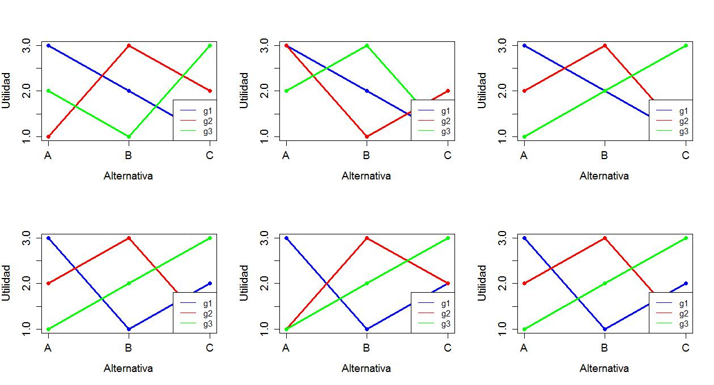
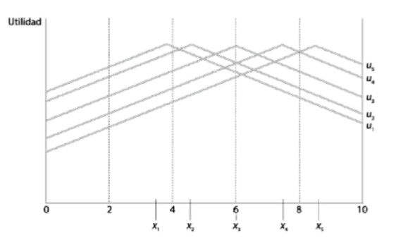

Economía Política Internacional
U1. Preferencias individuales y decisiones colectivas. Teoría de la elección social
Enfoque metodológico
Racionalidad clásica
Los individuos que nos interesa estudiar son personas comunes que tienen deseos y creencias. Ambos afectan su comportamiento. Hay deseos que provienen desde la propia naturaleza humana como el deseo de supervivencia y reproducción, otros que provienen de la vida social, como el tipo de ropa que usamos o la música que escuchamos y otros que provienen de fuentes religiosas, culturales ideológicas, entre otras. En el mundo de la economía política, nos referimos a los deseos como preferencias. Y no nos interesa explicar por qué las preferencias son como son –son dadas y estables, sino que nos preocupa analizar el impacto de esas preferencias.
Preferencias: interior y exterior
- El mundo de las preferencias es un mundo interior \(\longrightarrow\) las personas no revelan en todo momento y lugar sus preferencias sobre todas las cosas.
- Debemos hacer algunos supuestos sobre sus preferencias –pueden derivarse de intuiciones, evidencias.
- Pero también existe un entorno exterior \(\longrightarrow\) incertidumbre de diversa indole. Esta incertidumbre afecta la forma en que los individuos expresan sus preferencias.
Preferencias: interior y exterior (cont.)
Supongamos que mi preferencia sea obtener un 10 en el examen. Yo no puedo elegir “obtener un 10 en el examen”. Pero puedo elegir un instrumento (acción) para llegar a obtener un resultado en línea con mi preferencia. Si una acción es “estudiar la noche previa” y la otra es “ir al cine la noche previa” y si se sabe con certeza que la primera conducirá al resultado preferido, entonces como actor racional elijo aquella que conduzca al resultado.Pero: en general los individuos no tienen conocimiento perfecto de como un instrumento conduce al resultado. Además, eventos inesperados. Es aquí donde entran las creencias
Creencias
- Creencias \(\longrightarrow\) ideas que un individuo posee en relación a la eficacia de un determinado instrumento (comportamiento o acción) para obtener un resultado que está en línea con un deseo de ese individuo.
- Las creencias conectan los instrumentos con los resultados. Cuando un individuo actua de acuerdo tanto en base a sus preferencias como a sus creencias, se dice que existe racionalidad instrumental.
- Las creencias cambian y eso hace que se revisen las ideas sobre la eficacia de los instrumentos.
Resumiendo
Un individuo racional es aquel que combina creencias sobre el entorno exterior y preferencias sobre cosas del entorno exterior de una manera consistente. Este enfoque implica una forma de individualismo metodológico. Lo más relevante de este enfoque es la observación de que los individuos tienen preferencias y creencias. Los colectivos –grupos, clases, empresas, naciones- no tienen preferencias y creencias en el sentido cognitivo. Aquí entra en juego el tema de la agregación de preferencias y creencias
Elecciones individuales y colectivas
Preferencia y elección
- Un individuo, \(i\), y tres objetos –“alternativas”-, \(A\), \(B\), y \(C\) sobre los cuales \(i\) tiene preferencias.
- El individuo \(i\) es capaz de hacer evaluaciones del tipo:
- “Prefiero \(A\) a \(B\)”
- “Soy indiferente entre \(B\) y \(C\)”.
- La relación \(A \succ B\) representa en simbolos el primer enunciado; la relación \(B ~ C\) el segundo
- La elección de \(i\) es racional si está de acuerdo con su preferencia.
Propiedades de las relaciones de preferencia
Completitud (comparabilidad). Las alternativas son comparables si, dadas dos alternativas posibles, \(A\) y \(B\), tenemos ya sea \(A \succ B\), \(B \succ A\), o \(A ~ B\). Las alternativas son comparables si el individuo \(i\) prefiere la primera a la segunda, la segunda a la primera, o es indiferente entre una y otra.
Transitividad. La relación de preferencia es transitiva si, dadas tres alternativas –\(A\), \(B\), y \(C\)-, si \(A \succ B\) y \(B \succ C\), entonces \(A \succ C\). Si el individuo \(i\) prefiere \(A\) a \(B\) y \(B\) a \(C\), entonces prefiere \(A\) a \(C\).
Ordenamiento de preferencias
- Si las preferencias de \(i\) satisfacen estas propiedades, se dice que \(i\) tiene un ordenamiento de preferencias. La elección racional será aquella que esté al inicio (a la iquierda) del ordenamiento
- Estos ordenamientos de preferencias son personales. Cada persona puede tener un ordenamiento diferente.
- No todas las relaciones entre “alternativas” son completas o transitivas. Ejemplos:
- La comparación debe tener sentido para el individuo \(\longrightarrow\) elegir entre cosas desconocidas (comparabilidad); además, la comparación debe ser sobre algo que le importa al individuo
Ejemplo: Preferencias deportivas
- Supongamos que le pedimos a un ciudadano que elabore su relación de preferencias por los equipos del Mundial 2018. En total son 32 equipos.
- Si esta persona sólo tiene algun tipo de información sobre 31 de los 32 equipos –desconoce absolutamente todo sobre Islandia \(\longrightarrow\) viola propiedad de “completitud”
- Si esta persona puede comparar todos los equipos en su deseo de quien le gustaría gane el Mundial y los ordena así: \(Ger \succ Bra\) y \(Bra \succ Uru\), pero prefiere que \(Uru \succ Ger\) \(\longrightarrow\) viola propiedad de “transitividad”.
De lo individual a lo social
- Teoría de la elección social \(\longrightarrow\) estudio de los procesos colectivos de decisión a través de modelos de cómo agregar insumos individuales –preferencias, bienestar- en productos colectivos –preferencias, bienestar.
- Condorcet y Borda plantearon el problema en el siglo 19; Arrow, Sen y Black lo teorizaron en el siglo 20.
- La influencia de la teoría de la elección social ha sido fundamental en el progreso de la economía, la ciencia política y la sociología, entre otras disciplinas
Supuestos del análisis posterior
- Existe un número impar de individuos que eligen entre:
- Dos (2) alternativas
- Más de dos (2) alternativas
- Los individuos eligen racionalmente
- Los individuos votan sinceramente –no estrategicamente
- Todos los individuos participan.
Reglas de decisión/elección
- Existen múltiples reglas de votación:
- Unanimidad \(\longrightarrow\) todos tienen que preferir la misma alternativa
- Regla de mayoría de primera preferencia \(\longrightarrow\) todos eligen su primera preferencia y si alguna recibe la mitad mas uno de los votos, es la elegida.
- Regla de mayoría con votación round-robin \(\longrightarrow\) se combinan las alternativas en todos los pares posibles y se votan en rondas.
- Regla de mayoría con fijación de agenda \(\longrightarrow\) se vota de a pares pero alguien fija la agenda
Dos alternativas
- Condiciones deseadas de sistema de reglas de votación:
- Anonimidad \(\longrightarrow\) si dos votantes cambian sus votos antes de emitirlos, el resultado de la elección no cambia (votantes tratados simétricamente)
- Neutralidad \(\longrightarrow\) si una nueva elección se hace y cada votante individual revierte su orden de preferencia –i.e originalmente votó por A, ahora por B y viceversa-, el resultado de la elección se revierte (alternativas tratadas simétricamente)
- Monotonicidad \(\longrightarrow\) si se hace una nueva elección y un votante único que antes votó por el perdedor ahora vota por el ganador, el ganador es el mismo.
Dos alternativas (cont.)
- Caso de dos opciones \(\longrightarrow\) siempre que el número de votantes sea impar, habrá un resultado cierto. Si se vota por regla de mayoría, se elegirá la opción preferida por una mayoría de votantes, i.e. \(\frac{N+1}{2}\)
Teorema de May. El único método que satisface las condiciones de anonimidad, neutralidad y monotonicidad para determinar un ganador de una elección entre dos alternativas es la regla de la mayoría.
Dos alternativas: Ejemplo
- Tres votantes, dos alternativas Suponga que:
- \(A \succ B\)
- \(A \succ B\)
- \(B \succ A\)
- El ganador por mayoría simple de esta elección es \(A\). ¿Que pasa si dos votantes intercambian sus votos? (anonimidad)
- \(A \succ B\)
- \(B \succ A\)
- \(A \succ B\)
Dos alternativas: Ejemplo (cont.)
- Tres votantes, dos alternativas ¿Que pasa si cada uno revierte su preferencia? (neutralidad)
- \(B \succ A\)
- \(B \succ A\)
- \(A \succ B\)
- ¿Qué pasa si 3 ahora vota por el ganador? (monotonicidad)
- \(A \succ B\)
- \(A \succ B\)
- \(A \succ B\)
- El ganador sigue siendo el mismo, \(A\).
Imposibilidad de eleccion: más de 2 (dos) alternativas
Más de dos alternativas
- Con dos alternativas \(\longrightarrow\) regla de mayoría para agregar preferencias individuales en preferencias sociales produce un claro ganador que satisface propiedades deseadas
- ¿Qué sucede si, como en innumerables situaciones de la vida real, hay más de dos alternativas?
- Problema \(\longrightarrow\) existe alguna regla de votación que permita agregar preferencias individuales en preferencias sociales y que produzca un claro ganador y que satisfaga propiedades deseadas?
- La respuesta es no.
Condorcet: Teorema y paradoja
- Teorema del jurado de Condorcet Si cada miembro de un jurado tiene una probabilidad igual e independiente, \(0.5<p<1\) de adoptar la decisión correcta sobre la culpabilidad o inocencia de un acusado, entonces la probabilidad de que el jurado como un todo adopte la decisión correcta se acercará a 1 a medida que el tamaño aumenta.
- La paradoja de Condorcet A pesar de que las preferencias individuales sean “racionales” (transitivas), las preferencias del grupo (mayoría) pueden ser “irracionales” (no transitivas).
La solución y el problema
- La primera idea de Condorcet permite permite justificar votaciones colectivas que incluyan, dentro de lo posible, el mayor tamaño posible de grupo –jurados populares, elecciones presidenciales.
- La segunda idea plantea un problema en relación al metódo de decisión colectiva \(\longrightarrow\) la elección por mayoría simple es un método válido de elección pero puede estar asociado a este problema de “irracionalidad” del colectivo.
- Sus planteos le valieron conceptos actuales como ganador de Condorcet y ciclos de Condorcet
Ilustración
- Suponga que un colectivo debe elegir entre tres alternativas: A, B y C. Se pueden imaginar 6 formas diferentes en que las preferencias pueden ser ordenadas:
- \(A \succ B \succ C\)
- \(A \succ C \succ B\)
- \(B \succ A \succ C\)
- \(B \succ C \succ A\)
- \(C \succ A \succ B\)
- \(C \succ B \succ A\)
- Suponga ahora que ahora hay sólo 3 individuos cuyas preferencias son:
Ilustración (cont.)
- \(A \succ B \succ C\)
- \(B \succ C \succ A\)
- \(C \succ A \succ B\)
- Imagine ahora que se vota de a pares.
- Supongamos un voto entre A y B. ¿Quién gana? A. Ahora un voto entre B y C. ¿Quién gana? B. Y un voto entre C y A. ¿Quién gana? C
- ¿Qué alternativa debería ganar si hay transitividad? A. Pero no hay transitividad. Se da un ciclo de Condorcet \[A \succ B \succ C \succ A\]
- Imagine ahora que se vota de a pares.
Ciclos de Condorcet
Ganador de Condorcet. Un ganador de Condorcet es una alternativa tal que recibe la mayoría de los votos cuando es apareada contra cada una de las otras alternativas
Ciclos de Condorcet. Un ciclo de Condorcet ocurre cuando existe una violación del principio de transitividad en el ordenamiento de las preferencias sociales
Ciclos de Condorcet (cont.)
Teorema I. Si hay un ciclo de Condorcet, no hay ganador de Condorcet - Ejemplo. Consideremos el caso con tres alternativas. Sea \(A \succ B \succ C \succ A\). ¿Es A un ganador de Condorcet? \(\longrightarrow\) No, dado que \(C \succ A\). ¿Algún otro (B o C) es un ganador de Condorcet? \(\longrightarrow\) No, porque \(A \succ B\) (B no es). No, porque \(B \succ C\) (C no es)
Teorema II. Hay ciclo de Condorcet cuando no hay ganador de Condorcet
Orden de votación
- Cuando hay ciclos de Condorcet, el orden en que se vota es crucial. Supongamos que el orden fuera:
- 1ra vot: A vs B. 2da vot: ganador de A vs B contra C \(\longrightarrow\) dado que \(A \succ B\) y \(C \succ A\), gana C
- 1ra vot: A vs C. 2da vot: ganador de A vs C contra B \(\longrightarrow\) dado que \(C \succ A\) y \(B \succ C\), gana B
- 1ra vot: B vs C. 2da vot: ganador de B vs C contra A \(\longrightarrow\) dado que \(B \succ C\) y \(A \succ B\), gana A.
- La alternativa electa depende de cómo (y quién) se disponga el orden de votación!
Orden de votacion y “agenda-setting”
- Ilustra la importancia del “poder de agenda” –qué alternativas considerar y en qué orden las votamos.
- ¿Quiénes establecen la agenda en la vida real?
- En el Congreso, el Presidente de la Cámara y Presidentes de Comisión tienen poderes para decidir que asuntos se giran y proponer el orden de votaciones. En EEUU, es el Speaker of the House y el líder del Senado
- En regímenes presidencialistas, los ejecutivos también tienen poder de agenda (DNU, vetos)
- El poder de agenda no es ilimitado ni da control absoluto
¿Son relevantes en la práctica?

Probabilidad de ocurrencia de ciclos
Pero cómo que no sabías!

Teorema de la imposibilidad versión argenta
Consecuencias de los ciclos
- Los ciclos de Condorcet existen, sobre todo, cuando existen muchas alternativas entre las cuales elegir y muchos individuos que elijen.
- ¿existe alguna forma de agregar preferencias que es mejor a otra?
- La respuesta: no existe una respuesta correcta!
- Ninguna forma es perfecta
- Este es uno de los resultados mas famosos en la teoría de la elección social y se denomina el Teorema de la Imposibilidad de Arrow.
Arrow: el padre de la criatura
- Dados:
- Un conjunto de alternativas, \(O\)
- Un conjunto de individuos, \(G\)
- Una regla de decisión social, \(\succ\)
- Las preferencias de un individuo son “racionales” si son:
- Completas \(\longrightarrow\) dadas dos alternativas cualquiera, \(A\) y \(B\), cada individuo puede rankearlas/ordenarlas –i.e. \(A \succ B\), \(A=B\), o \(B \succ A\).
- Transitivas \(\longrightarrow\) dadas tres alternativas cualquiera, \(A\), \(B\) y \(C\), si \(A \succ B\) y \(B \succ C\), entonces \(A \succ C\)
Condiciones de Arrow (justicia)
- Dominio universal \(\longrightarrow\) supone que individuos tienen preferencias racionales sobre cualquier alternativas de \(O\)
- Optimalidad de Pareto \(\longrightarrow\) si todo los individuos de \(G\) prefieren \(A\) a \(B\), la regla de decisión debe preferir \(A\) a \(B\).
- Independencia de alternativas irrelevantes \(\longrightarrow\) si hay dos conjuntos de individuos, \(G\) y \(G'\) y en cada uno sea \(A \succ B\), el orden entre A y B debe ser el mismo independientemente de preferencias por C.
- No dictadura \(\longrightarrow\) ningún \(i\) de G tal que sus preferencias fijen el orden social independientemente del resto
Teorema de la imposibilidad
No existe una función de ordenamiento social \(\succ\) tal que para cualquier grupo G cuyos miembros tengan todos preferencias racionales, \(\succ\) sea un ordenamiento racional (transitivo) y que satisfaga los cuatros supuestos de dominio universal, optimalidad de Pareto, independencia de alternativas irrelevantes y no dictadura.
- Houston, tenemos un problema! \(\longrightarrow\) los ciclos de Condorcet. Si queremos una función de ordenamiento social que cumpla con todas esas condiciones, no será transitiva \(\longrightarrow\) habrá ciclos.
Menos generalidad: 1) restringir preferencias, 2) restringir instituciones
Preferencias espaciales y votante mediano
- Es díficil relajar cualquiera de los supuestos de optimalidad de Pareto, independencia de alternativas irrelevantes y de no dictador sin caer en injusticias
- La condición del dominio universal, sin embargo, puede ser relajada ya que no es una condición de equidad, sensatez o adecuación; es un requisito de dominio.
- Es muy restrictivo ya que exige que el mecanismo de decisión colectivo funcione en todos los ámbitos imaginables (dominio más amplio). ¿Que pasa si restringimos el dominio? (menos generalidad)?
AP: Preferencias s/ aborto
- Aborto en EEUU \(\longrightarrow\) preferencias polarizadas.
- Provida (V) \(\longrightarrow\) prohibir aborto en cualquier caso. Proeleccion (E) \(\longrightarrow\) mujer derecho absoluto a elegir. Roe-Wade (1973) (R) \(\longrightarrow\) aborto en etapa temprana
- ¿Cuáles son las preferencias de los grupos?
- \(V \succ R \succ E\) (provida)
- \(E \succ R \succ V\) (proeleccion)
- \(R \succ V \succ E\) (roe-wade1)
- \(R \succ E \succ V\) (roe-wade2)
- \(R\) no es la peor para ningún grupo \(\longrightarrow\) ¿consenso?
AP: Preferencias s/ aborto

Teorema de pico único
Sea un conjunto \(O\) de alternativas del cual un grupo \(G\) de individuos debe elegir una. Si, por cada subconjunto de 3 alternativas, y para cada miembro, una de estas nunca es la peor de las tres, entonces el consenso es lo suficientemente generalizado como para que el método de la regla de la mayoría arroje preferencias de grupo transitivas
- Implicancia fundamental \(\longrightarrow\) aún si miembros del grupo tienen ideas muy diferentes sobre una política, la regla de la mayoría funciona siempre y cuando haya un grado mínimo de consenso
Forma de preferencias
Tipología de preferencias individuales
Restricción de dominio: preferencias
- Si las preferencias son de pico único, entonces la regla de la mayoría produce una agregación de preferencias individuales a sociales que cumple todas las condiciones de Arrow y que además es transitiva.
- ¿Es razonable restringir las preferencias de este modo? > Preferencias en la práctica Suponga 3 partidos: izquierda (I), centro (C), y derecha (D). El individuo 1 se identifica con I. Tendrá \(I \succ C \succ D\). El individuo 2 se identifica con D y tendrá \(D \succ C \succ I\). Y el de centro podrá tener \(C \succ \ D \succ I\) o \(C \succ I \succ D\).
Ejemplos de preferencias de pico único
- Pueden pensarse las siguientes preferencias:
- Preferencias escala ideológica lib-con
- Preferencias por tasa impositiva y gasto público en educación
- Preferencias por localización de bien público (plaza)
- Preferencias por arancel a importación
- Una fn. de U que describe PPU es del tipo (\(b_i\) es punto ideal del individuo \(i\)):
\[\begin{aligned} u_i=-(g-b_i)^2 \\ u_i=1-\lvert g-b_i \rvert\end{aligned}\]
Ejemplos de preferencias de pico único (cont.)

Funciones de utilidad de pico único
Preferencias sociales: ¿de pico único?
- Se ha criticado la restricción de las preferencias a las de pico único argumentando que no aplican a muchas situaciones económicas y políticas
- Muchos problemas económicos –alícuotas impositivas; tamaño del gobierno; gasto en defensa; localización de un bien público- son variables continuas que pueden modelarse con preferencias de pico único.
- El problema surge con elecciones entre cosas que no tienen un orden dado –qué banda debería tocar en un evento; de qué color pintar las aulas.
Regla de votación: Borda
- El método de Borda es una alternativa a Condorcet para superar el problema de los ciclos. Suponga que existen 5 votantes y 3 alternativas:
| Orden | 1 | 2 | 3 | 4 | 5 |
|---|---|---|---|---|---|
| 1 | A | A | A | B | B |
| 2 | B | B | B | C | C |
| 3 | C | C | C | A | A |
- Cada individuo (grupo de individuos) puntuan alternativas según el lugar (orden) que ocupen en su ordenamiento de preferencias.
Regla de votación: Borda (cont.)
- Existen dos implementaciones alternativas de la regla de Borda:
- La alternativa en primer lugar recibe \(n\) puntos, la alternativa en segundo lugar, recibe \(n-1\) puntos, y así hasta la última alternativa; donde “n” es el número de alternativas. La última recibe 1 (un) punto.
- La alternativa en primer lugar recibe \(n-1\) puntos, la alternativa en segundo lugar, recibe \(n-2\) puntos, y así hasta la última alternativa; donde “n” es el número de alternativas. La última recibe 0 (cero) puntos.
- Pueden usarse cualquiera a menos que explícitamente se indique alguno en particular.
Regla de votación: Borda (cont.)
- En este caso (solucionando por método “n-1”, las alternativas recibirían:
- \(A\) \(\longrightarrow\) 6 votos
- \(B\) \(\longrightarrow\) 7 votos
- \(C\) \(\longrightarrow\) 2 votos
- Parece un método razonable aunque algo difícil de implementar \(\longrightarrow\) el candidato C podría desistir de presentarse
- En ese caso, la primera alternativa recibe 1 (uno) y la segunda 0 (cero).
Regla de votación: Borda (cont.)
- Ahora con este nuevo esquema, el ganador es \(A\)! (obtiene 3 contra 2 votos de \(B\)) \(\longrightarrow\) presencia o no de alternativas irrelevantes –\(C\)- puede modificar el resultado de la elección
- Este método sin embargo se usa mucho en eventos y competiciones musicales y en elección de sedes, mejores jugadores, etc.
- El principal problema del método Borda \(\longrightarrow\) viola el principio de mayoría y viola el ganador de Condorcet
Modelos espaciales de elección (preferencias espaciales)
Preferencias espaciales
Problema del directorio. La junta de directores del BCRA deben adoptar una decisión sobre la tasa de interés interbancaria. Las tasas de interés, en cuanto números, son en efecto puntos de una línea: el extremo inferior es 0%, el extremo superior 10%, es decir la linea se traza para el intervalo [0,10]. Supongamos que hay 5 (cinco) directores y que cada uno tiene un punto de esa linea (tasa) que es el que más desea y luego sus preferencias disminuyen a medida que se alejan de ese punto en cualquier dirección
Preferencias espaciales (cont.)
Preferencias a lo largo de una linea
Preferencias espaciales (cont.)
- Las cinco personas, \(G={1,2,3,4,5}\) tienen las preferencias mostradas en el gráfico anterior y representadas como \(x={x_1,x_2,x_3,x_4,x_5}\).
- Cada individuo tiene un punto favorito \(\longrightarrow\) “punto ideal”. Esa es la tasa de interés que el/ella prefiere en primer lugar. Por ejemplo, para el director 1:
- \(x_1 \succ x_2 \succ x_3 \succ x_4 \succ x_5\)
- Las preferencias se “miden” a partir de la utilidad –i.e. la altura de la curva; cada una de las “campanas” es una función de utilidad para cada director.
Preferencias espaciales (cont.)

Conjuntos preferidos
Preferencias espaciales (cont.)
- Tomemos ahora solamente al individuo 5. Su perfil de preferencias es \(x_5 \succ x_4 \succ x_3 \succ x_2 \succ x_1\). Su tasa de interés favorita (punto ideal) es de \(8.25\).
- Tomemos una tasa cualquiera –i.e. \(7\). El conjunto de puntos (tasas) que este individuo prefiere a \(7\) es el que se representa como \(P_5(y)\): ese conjunto contiene a todas las tasas de interés entre 7 y 9.50 [¿Por qué?]
- En otras palabras, si la tasa \(y\) fuera una propuesta concreta, este individuo prefería todos los puntos del conjunto \(P_5(y)\) a \(y\).
Preferencias espaciales (cont.)

Superponiendo los conjuntos preferidos
Preferencias espaciales (cont.)
- Ahora veamos los “conjuntos preferidos a \(y\)” de todos los directores (note \(y\) un poco abajo de \(6\)). Puede verse que:
- \(P_4(y)\) y \(P_5(y)\) tienen puntos en común
- \(P_1(y)\) y \(P_2(y)\) tienen puntos en común
- Los individuos 3, 4 y 5 tienen conjuntos preferidos a \(y\) que se superponen; estos tres individuos forman una mayoría (3 contra 2) por lo que esa mayoría vence a una propuesta como \(y\).
- Pueden pensarse en todas las mayorías posibles que vencen a \(y\) dependiendo de posición de \(y\) en la escala.
Preferencias y coaliciones
| Tamaño coalicion | Coalicion |
|---|---|
| 3 | (1,2,3) (1,2,4) (1,2,5) (1,3,4) (1,3,5) (1,4,5) (2,3,4) (2,3,5) (2,4,5) (3,4,5) |
| 4 | (1,2,3,4) (1,2,3,5) (1,2,4,5) (1,3,4,5) (2,3,4,5) |
| 5 | (1,2,3,4,5) |
El rol del mediano
El rol del votante mediano
El rol del mediano (cont.)
Teorema del votante mediano (TVM). Si miembros de un grupo \(G\) tienen preferencias de pico único, el punto ideal del VM es un ganador de Condorcet.
- Sería \(x_3\). Suponga \(\alpha\) a la izquierda de \(x_3\). Miembros 1 y 2 prefieren \(\alpha\) pero 3, 4 y 5 prefieren \(x_3\) a \(\alpha\). \(x_3\).
- Suponga \(\beta\) a la derecha de \(x_3\). Miembros 4 y 5 pueden preferirlo a \(x_3\) pero los miembros 1, 2 y 3 prefieren \(x_3\) a \(\alpha\).
- \(x_3\) vence a todos los puntos restantes. El punto ideal del VM no es vencido por ninguno y esta es la decisión de mayoría.
El teorema del votante mediano
- El teorema postula que hay un único ganador por mayoría y que ese ganador es el VM –aquel el medio de la distribución en relación a la dimensión explorada
- Uno de los resultados más importantes en la teoría de la votación \(\longrightarrow\) postula una convergencia a las preferencias del votante mediano.
- En cualquier situación de elección en votación por mayoría, la mejor forma de obtener la mayoría de los votos es acercarse a las preferencias del votante mediano.
- El TVM no aplicable a situaciones de más de dos dimensiones de las preferencias \(\longrightarrow\) originan ciclos
El teorema del votante mediano (cont.)
- Note que la intensidad de las preferencias no importa para nada en este resultado.
- Puede que me desagrade mucho un candidato pero mi voto cuenta exactamente lo mismo que el de otra persona que es casi indiferente entre ese candidato y cualquier otro.
- Se deriva del principio “una persona, un voto” \(\longrightarrow\) una de las diferencias fundamentales entre las elecciones y las decisiones económicas
- Se puede relajar esto (volveremos mas adelante) \(\longrightarrow\) costo de votar (registración); contribuciones de campaña; influencia.
Supuestos restrictivos del análisis
- Supuestos de base son:
- Número impar de miembros \(\longrightarrow\) el mediano es el que está siempre en el medio de la distribución (espacial). Si fuera par (por ejemplo, 4), tanto 2 y 3 son medianas. Es decir, habria ganadores de Condorcet, pero no serían únicos.
- Participación total \(\longrightarrow\) todos votan. No siempre pasa (abstenciones, ausencias). El resultado del mediano se aplica pero cambia la identidad del votante mediano –i.e. cambia el punto elegido.
- Voto sincero \(\longrightarrow\) si las personas no votan de acuerdo a sus preferencias, entonces existe voto estratégico.
Limitaciones
- Algunas limitaciones de este modelo son:
- Son modelos de decisión colectiva unidimensionales. Muchísimas situaciones sociales en que la cuestión no puede reducirse a una sola dimensión.
- Voto a presidente/gobernador \(\longrightarrow\) dimensión económica y dimensión social.
- Elección en concursos de cantantes, belleza –i.e. varias dimensiones
- Cuando se generaliza a mas de una dimensión, el resultado del votante mediano es mucho más restrictivo.
- No da ningún rol a las instituciones políticas
Práctica
Suponga tres votantes, tres alternativas y los siguientes ordenamientos de preferencias:
Orden Juan Pedro María 1 A C B 2 B A C 3 C B A ¿Hay ganador por mayoría absoluta? No. Ninguna tiene la mitad mas uno de los votos (2). ¿Hay ganador por mayoría simple (pluralidad)? No. Ninguna alternativa tiene más votos que otra –ie. hay triple empate.
Práctica
Suponga tres votantes, \(G={1,2,3}\) con un orden completo y transitivo de preferencias por tres políticas \(q={q_1,q_2,q_3}\). Se elige por regla de mayoría, agenda abierta y voto sincero. Las preferencias son: \[ q_1 \succ q_3 \succ q_2 \\ q_2 \succ q_1 \succ q_3 \\ q_3 \succ q_2 \succ q_1 \\ \]
¿Existe un ganador de Condorcet? Demuestre.
Ahora V1 fija agenda. Selecciona dos rondas de votación. ¿Cuál es la agenda óptima según 1?
¿Puede V3 mejorar su utilidad votando estratégicamente?
Práctica
Considere los siguientes perfiles de preferencias para tres individuos: \[ x \succ y \succ z \succ w \\ y \succ z \succ x \succ w \\ z \succ x \succ y \succ w \]
De acuerdo a la regla de la mayoría, obtenemos que \(y \succ z \succ x \succ w\). Sin embargo, hay algo que “está mal” acerca de este ordenamiento social. Diga qué es y porqué.
Práctica
Suponga la siguiente distribución de preferencias por 4 (cuatro) alternativas entre 3 (tres) grupos de votantes.
Ord Pts 49 48 3 1ro 4pts A B C 2do 3pts B D B 3ro 2pts C C D 4to 1pts D A A Identifique cuál es el candidato Borda
Práctica
- Suponga 30 personas cuyas preferencias por 4 (cuatro) alternativas son:
| votantes | preferencias |
|---|---|
| 10 | \(A \succ D \succ C \succ B\) |
| 10 | \(B \succ A \succ D \succ C\) |
| 10 | \(C \succ B \succ A \succ D\) |
- ¿Puede \(D\) ganar democráticamente? Si, fijando el orden de votación: 1) Voto entre \(B\) y \(A\); 2) Voto entre \(B\) y \(C\); 3) Voto entre \(C\) y \(D\) \(\longrightarrow\) todos disconformes con el resultado [¿Por qué?]